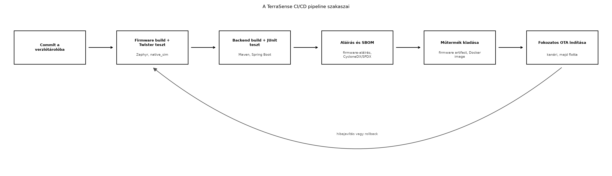

A TerraSense fejlesztése során a ts-node firmware, a
ts-gw gateway és a ts-backend kódbázisa
párhuzamosan változik. A kézi build és telepítés lassú, hibás és nem
reprodukálható: egy fejlesztő más Zephyr SDK-val, más függőségverziókkal
vagy más Docker-alaprendszerrel dolgozik, mint a kollégája, ezért a
tesztelés eredménye nem megbízható. A biztonsági frissítéseknél (lásd OTA-frissítés: A/B képek, rollback, delta, fokozatos
kiadás) és a teljes rendszer átvételénél (Záróprojekt: a teljes TerraSense rendszer összeállítása
és átvétele) a kiadott műtermékeknek – firmware, konténerképek,
konfigurációk – visszakövethetőnek, aláírtnak és ellenőrzöttnek kell
lenniük. A CI/CD folyamat ezt automatizálja: minden commit után futtat
buildet, teszteket, aláírást és SBOM-generálást, majd a kiadási
szakaszban előkészíti a fokozatos OTA-telepítést.
Definíció. A folytonos integráció (Continuous Integration, CI) olyan gyakorlat, amelyben a fejlesztők kódváltoztatásai egy közös verziótárolóba kerülve automatikusan buildelésre és tesztelésre kerülnek. Célja a hibák korai felismerése és a mindig működő főág fenntartása.
Definíció. A folytonos szállítás (Continuous Delivery, CD) a CI kiterjesztése: az ellenőrzött műtermékek automatikusan kiadható állapotba kerülnek, és a telepítés – esetünkben a fokozatos OTA – felügyelt, jóváhagyott lépésben történik. Ha a telepítés is teljesen automatikus, folytonos telepítésről (Continuous Deployment) beszélünk. Az IoT-ban a CD többnyire emberi vagy policy-alapú jóváhagyást igényel a flotta mérete és a visszafordíthatóság miatt.
Definíció. A pipeline szakaszokból (stage) álló automatizált folyamat, amelyben egy szakasz kimenete a következő bemenete. Egy tipikus IoT-pipeline szakaszai: előkészítés, build, teszt, aláírás, SBOM, műtermék-kiadás, OTA-kiadás.
Definíció. A reprodukálható build azt jelenti, hogy ugyanabból a forrásból, ugyanazokkal a függőségekkel és eszközökkel bárki, bármikor ugyanazt a bináris vagy konténerkép műterméket állítja elő. Ez a biztonsági audit és a visszakövethetőség alapja.
Definíció. Az SBOM (Software Bill of Materials, szoftver-összetevőjegyzék) géppel olvasható lista a szoftver összes alkotóeleméről, függőségéről, verziójáról és licencéről. Az SBOM a sebezhetőség-ellenőrzés bemenete, és a Cyber Resilience Act követelményei között is szerepel.
Az alábbi ábra a TerraSense pipeline fő szakaszait és azok sorrendjét mutatja:

A fenti folyamatábra lépései szöveggel is leírva:
ts-node vagy
ts-backend kódot a közös tárolóba tolja.west twister tesztfuttató a
host-tesztekkel (lásd Eszközszoftver tesztelése a
hoston).| Kérdés | Változatok | Kompromisszum |
|---|---|---|
| Hol futtassuk a buildet? | Konténerben | Reprodukálható, de nagyobb erőforrásigény; a konténer verzióját is rögzíteni kell. |
| Natív CI-gépen | Gyorsabb lehet, de a toolchain eltérése rejtett hibákat hoz be. | |
| Milyen tesztet futtassunk a pipeline-ban? | Csak unit + host-teszt | Gyors, de nem fedi a valós hardver hibáit. |
| HIL vagy hardveres célra is | Lassabb, drágább, de közelebb a valósághoz; TerraSense
alapértelmezésben native_sim-et használ. |
|
| Mikor generáljunk SBOM-ot? | Minden buildnél | Naprakész, de növeli a futási időt és a tárolási költséget. |
| Csak release-nél | Kisebb költség, de a köztes build sebezhetősége észrevétlen maradhat. | |
| Hogyan kezeljük az aláírási kulcsot? | HSM-ben vagy biztonságos kulcstárolóban | Erős védelem, de költségesebb; laborban szoftveres kulcs elég, jelölten csak tesztcélra. |
| A CI-ben fájlként | Egyszerű, de a kulcsszivárgás súlyos kockázat. | |
| Fokozatos OTA kiadásnál? | Kanári → béta → teljes | Kellő visszajelzés és rollback lehetőség, de lassabb terítés. |
| Azonnali teljes terítés | Gyors, de egy hibás kép az egész flottát leállíthatja. |
A TerraSense-ben konténeres buildet, minden buildnél SBOM-generálást, kiadási szakaszban aláírást és kanári-alapú fokozatos OTA-t használunk.
A következő példa a TerraSense repo .ci/pipeline.yaml
vázlata. A fájl egy általános, szolgáltató-semleges pipeline-leíró
sablon; az éles CI-rendszerben az adott szolgáltató szintaxisára kell
igazítani, és a titkokat biztonságos, titkos tárolóban kell megadni.
# .ci/pipeline.yaml - TerraSense CI/CD vázlat (szolgáltató-semleges)
stages:
- build
- test
- sign
- publish
- release
variables:
ZEPHYR_SDK_IMAGE: zephyr-sdk:0.16.8-ubuntu24.04
MAVEN_IMAGE: maven:3.9-eclipse-temurin-21
IMAGE_REGISTRY: registry.lab.internal:5000
FIRMWARE_VERSION: "1.2.0"
firmware-build:
stage: build
image: ${ZEPHYR_SDK_IMAGE}
script:
- west init -l .
- west update
- west build -b native_sim ts-node
- cp build/zephyr/zephyr.exe artifacts/ts-node_${FIRMWARE_VERSION}.bin
artifacts:
paths:
- artifacts/
backend-build:
stage: build
image: ${MAVEN_IMAGE}
script:
- cd ts-backend
- mvn -q clean verify
artifacts:
paths:
- ts-backend/target/*.jar
firmware-test:
stage: test
image: ${ZEPHYR_SDK_IMAGE}
needs: ["firmware-build"]
script:
- west twister -b native_sim -T tests --inline-logs
backend-test:
stage: test
image: ${MAVEN_IMAGE}
needs: ["backend-build"]
script:
- cd ts-backend
- mvn -q test
firmware-sign:
stage: sign
image: ${ZEPHYR_SDK_IMAGE}
needs: ["firmware-test"]
script:
- west sign -t imgtool -- -k ${CI_SIGN_KEY} --version ${FIRMWARE_VERSION}
artifacts:
paths:
- artifacts/ts-node_${FIRMWARE_VERSION}.signed.bin
sbom-generate:
stage: sign
image: ${MAVEN_IMAGE}
needs: ["firmware-sign", "backend-test"]
script:
- cd ts-backend && mvn -q org.cyclonedx:cyclonedx-maven-plugin:makeAggregateBom
- mv ts-backend/target/bom.json artifacts/ts-backend-bom.json
artifacts:
paths:
- artifacts/
publish-firmware:
stage: publish
needs: ["firmware-sign", "sbom-generate"]
script:
- curl -T artifacts/ts-node_${FIRMWARE_VERSION}.signed.bin ${ARTIFACT_UPLOAD_URL}/
publish-backend:
stage: publish
needs: ["backend-test", "sbom-generate"]
script:
- docker build -t ${IMAGE_REGISTRY}/ts-backend:${CI_COMMIT_SHA} ts-backend
- docker push ${IMAGE_REGISTRY}/ts-backend:${CI_COMMIT_SHA}
- docker tag ${IMAGE_REGISTRY}/ts-backend:${CI_COMMIT_SHA} ${IMAGE_REGISTRY}/ts-backend:${FIRMWARE_VERSION}
- docker push ${IMAGE_REGISTRY}/ts-backend:${FIRMWARE_VERSION}
ota-release:
stage: release
needs: ["publish-firmware", "publish-backend"]
when: manual
script:
- curl -X POST ${OTA_CONTROL_URL}/release -d '{"version":"'${FIRMWARE_VERSION}'","ring":"canary"}'A példa magyarázata:
firmware-build lépés a Zephyr SDK-t tartalmazó
konténerben futtatja a west parancsokat, így a toolchain
verziója minden buildben azonos. A west init -l . a meglévő
manifestet használja, a west update a függőségeket a
manifestben rögzített verziókra húzza be.firmware-test az Eszközszoftver
tesztelése a hoston alfejezetben létrehozott host-teszteket futtatja
native_sim célon a Twister keretben. Ez a pipeline
automatikusan futtatja a filter.c és
irrigation_fsm.c teszteket.firmware-sign az OTA-frissítés:
A/B képek, rollback, delta, fokozatos kiadás alfejezetben bemutatott
imgtool segítségével aláírja a buildelt képet. A
${CI_SIGN_KEY} a CI titkos tárolójából jön, és sosem kerül
a repo-ba.sbom-generate a backend Maven-projektjéhez készít
CycloneDX SBOM-ot, majd az artifacts/ könyvtárba másolja. A
Zephyr oldalon az SPDX-alapú SBOM-generálás a west spdx
vagy a build integrációja lehet; ennek pontos parancsa a Zephyr
verziótól függ, ezért azt ellenőrzési igénnyel jelöljük a
forrásoknál.publish-* lépések feltöltik a műtermékeket. A
firmware artifact tároló URL-je és a registry címe laborpélda, nem
publikusan elérhető végpont.ota-release manuális jóváhagyást igényel
(when: manual), és a fokozatos OTA-t a canary
gyűrűvel indítja; a kanári csoport visszajelzése után a pipeline újabb
jóváhagyással a következő gyűrűre léptethető.A pipeline futását a CI-szolgáltató felületén, naplóiban és a kiadott műtermékek ellenőrzésével tudjuk ellenőrizni. A következő táblázat a tipikus hibákat és azok okait foglalja össze.
| Tünet | Lehetséges ok | Javítás |
|---|---|---|
west update nem találja a manifestet vagy a
függőségeket |
Hiányzik a west init -l ., vagy a manifest verziója
rossz |
A pipeline-hoz adott west init hívás, és a manifestben
rögzített Zephyr verzió ellenőrzése |
| A Twister teszt lokálisan fut, de a CI-ben elhasal | Eltérő toolchain konténer, hiányzó környezeti változó, nem rögzített board-cél | Ugyanazt a konténer-image-et és -b native_sim kapcsolót
használjuk; a west twister parancsot pontosan
reprodukáljuk |
| A firmware aláírása hiányzó kulcsra hibát ad | A ${CI_SIGN_KEY} nincs beállítva a titkos tárolóban
vagy lejárt |
A titkos kulcsot a CI-titkok között kell elhelyezni; laborban csak tesztkulcsot használjunk |
| Az SBOM nem keletkezik | Hiányzik a Maven-plugin vagy a cyclonedx függőség |
A plugin verzióját a pom.xml-ben rögzíteni kell; a
pipeline nem a legfrissebb, hanem a rögzített verziót hívja |
| A Docker push meghiúsul | A registry nem elérhető a CI-ről, vagy nincs jogosultság a feltöltéshez | A registry címét a CI-hez kell igazítani, a hitelesítést a titkos tárolóban kell kezelni |
| Az OTA-release nem indul el | A when: manual lépést nem hagyta jóvá senki, vagy az
OTA-vezérlő API nem elérhető |
A manuális jóváhagyás megerősítése, az OTA-vezérlő URL és token ellenőrzése |
Reprodukálhatatlan build: ha a konténer image
címkéjét latest-ként használjuk, a build időben eltérő
alaprendszert kaphat. Mindig pinelt, például
zephyr-sdk:0.16.8-ubuntu24.04 címkét használjunk, és a
függőségeket is rögzítsük (Zephyr manifest, Maven
pom.xml).
Aláírási kulcs a repóban: a privát kulcsot sokan a forráskód mellett tárolják, mert „úgyis csak labor”. Ez a szokás élesben azonnali kompromittálódáshoz vezet. A kulcs csak a CI titkos tárolójában, HSM-ben vagy hardware security module-ban létezhet. Laborban is jelöljük külön a tesztkulcsot, és ne terjedjen ki a kiadási pipeline-ra.
SBOM mint utólagos papírmunka: ha az SBOM-ot csak a végén, kézzel készítjük, az elavult lesz, és a sebezhetőség-ellenőrzés téves eredményt ad. Az SBOM-generálást a build részeként, minden verzióra kell futtatni, és a műtermékhez csatolni.
Fokozatos OTA rossz kezelése: az azonnali, 100%-os terítés nélkülözi a visszagörgetés lehetőségét, és egy rossz firmware az összes eszközt térdre kényszerítheti. A kanári gyűrűn mért állapot és a rollback-automatizmus (lásd OTA-frissítés: A/B képek, rollback, delta, fokozatos kiadás) nélkül ne adjunk ki új verziót.
Fogalmi kérdés. Miért fontos az SBOM az IoT-flotta biztonságában? Nevezzen meg legalább két fogyasztót az SBOM-nak, és magyarázza el, hogyan segíti a sebezhetőség-kezelést.
Tervezési feladat. Tervezzen CI/CD
pipeline-szakaszokat a TerraSense ts-node firmware-re és a
ts-backend szolgáltatásra. Határozza meg az egyes szakaszok
bemeneteit, kimeneteit és a közöttük lévő függőségeket. Milyen
műtermékek keletkeznek, és hol tárolják őket?
Implementációs feladat. Egészítse ki a
kidolgozott példában szereplő .ci/pipeline.yaml vázlatot
egy gateway-build szakasszal, amely a ts-gw
C++ programot konténerben buildeli (CMake, make), és az
elkészült binárist artifactként tárolja. A szakasz a build
szakaszfázisban fusson, és ne legyen függősége a firmware- vagy
backend-feladatoktól.
Hibakeresési feladat. A pipeline-ban a
firmware-test szakasz mindig elhasal, miközben a
firmware-build sikerrel lefut. A naplóban a következő
látható: west twister: command not found. Mi lehet az oka,
és hogyan javítaná? A megoldás során ne csak a tünetet, hanem a
valószínű okot is indokolja.
Fogalmi kérdés. Az SBOM fogyasztói közé tartozik a szoftverfejlesztő csapat (függőségkezelés), a biztonsági auditor (licencek és sebezhetőségek keresése), a vásárló vagy üzemeltető (transzparencia, bejelentési kötelezettség) és a sebezhetőség-szkenner (pl. OWASP Dependency-Check, Trivy). Az SBOM lehetővé teszi, hogy egy ismert sérülékenység (CVE) megjelenésekor azonnal meghatározzuk, mely komponensek és verziók érintettek, és így a javított verzióra való frissítést célzottan tervezzük meg.
Tervezési feladat. A pipeline szakaszai és
függőségei: firmware-build (bemenet: forrás, Zephyr
manifest; kimenet: ts-node.bin), firmware-test
(bemenet: a buildelt firmware és a tesztek; kimenet: teszt-jegyzőkönyv),
firmware-sign (bemenet: a tesztelt bináris, aláírási kulcs;
kimenet: aláírt ts-node.signed.bin),
backend-build (bemenet: forrás, Maven pom.xml;
kimenet: JAR), backend-test (bemenet: JAR, tesztek;
kimenet: teszt-jegyzőkönyv), sbom (bemenet: mindkét forrás;
kimenet: bom.json), publish (bemenet: aláírt
firmware, JAR, SBOM; kimenet: artifact-ok és Docker image a
registryben), release (bemenet: publikált műtermékek;
kimenet: OTA-kiadás). A műtermékeket dedikált artifact-tárolóban, a
Docker image-eket registryben tárolják.
Implementációs feladat. A ts-gw
buildjéhez a következő szakasz adható a pipeline-hoz:
gateway-build:
stage: build
image: gcc:13-ubuntu24.04
script:
- cd ts-gw
- cmake -S . -B build -DCMAKE_BUILD_TYPE=Release
- cmake --build build
- cp build/ts-gw artifacts/ts-gw_${CI_COMMIT_SHA}
artifacts:
paths:
- artifacts/A szakasz a build fázisban fut, és nincs szüksége a
firmware- vagy backend-feladatok kimenetére, ezért független. A konténer
image itt is rögzített címkéjű, a CMake-bináris a buildből kerül az
artifactok közé.
firmware-test szakaszban olyan konténer image-et
használunk, amely nem tartalmazza a west parancsot, vagy a
west nem szerepel a PATH-ban. A
firmware-build szakasz sikerül, mert ott a Zephyr SDK-t
tartalmazó image fut, de a teszt-szakasz esetleg más, általános image-et
használ. Javítás: a firmware-test szakaszban is ugyanazt a
Zephyr SDK image-et használjuk, és ha szükséges, a környezeti változók
beállításával (pl. ZEPHYR_SDK_INSTALL_DIR) tegyük
elérhetővé a west hívásokat.Az alfejezetben a TerraSense rendszer CI/CD folyamatát terveztük meg.
A pipeline szakaszai: reprodukálható build konténeres toolchainnel,
firmware Twister-tesztek native_sim célon, backend
Maven-tesztek, firmware-aláírás imgtool segítségével,
SBOM-generálás CycloneDX/SPDX formátumban, majd a műtermékek kiadása és
a fokozatos OTA-indítás kanári gyűrűvel. A kidolgozott példa a
.ci/pipeline.yaml vázlatot tartalmazza, amely a
firmware-build, firmware-test,
firmware-sign, backend-build,
backend-test, sbom-generate,
publish-* és ota-release szakaszokat kapcsolja
össze. A továbbvitt eredmény a .ci/pipeline.yaml és a hozzá
tartozó szakaszok: a záróprojekt Záróprojekt: a
teljes TerraSense rendszer összeállítása és átvétele során ezt a
pipeline-t futtatjuk a teljes rendszer buildjére, tesztelésére és
átadására.
west twister, west sign és a
Zephyr SBOM-generálás pontos CLI-kapcsolói a Zephyr aktuális
LTS-dokumentációjában ellenőrizendők. Az itt bemutatott parancsok a
Zephyr 3.x gyakori alakját követik, de a verziók között eltérés lehet; a
west spdx/SPDX-integráció eszközei verziófüggők.pom.xml-ben
rögzítendő; az itt használt cyclonedx-maven-plugin a
generikus hívás, de a pontos artifactId és konfiguráció a plugin
dokumentációjában ellenőrizendő.docker sbom) folyamatosan változnak; a
TerraSense példa ezeket nem írja elő kötelezően, csak a SBOM-generálást
mutatja be.CI_SIGN_KEY és a registry/artifact URL-ek a példában
laborcélú helyettesítők, nem valós Hitelesítési vagy elérési
adatok.